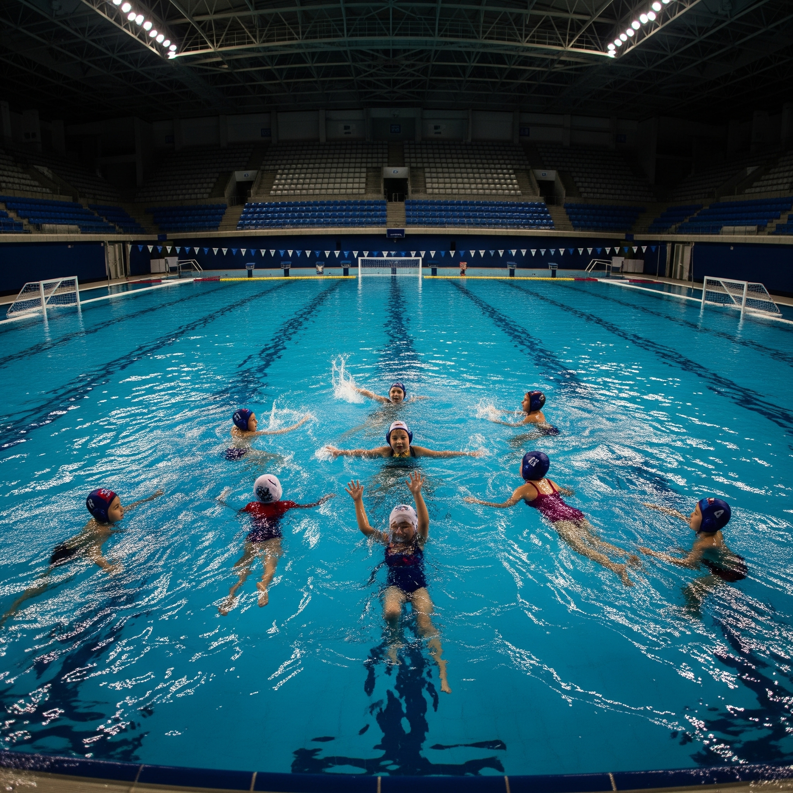

BVK Radnički je vrhunski vaterpolo klub posvećen negovanju talenata i promociji sporta. Sa bogatom istorijom i posvećenošću izvrsnosti, težimo da razvijamo kako vešte sportiste, tako i snažne pojedince.
Naš klub naglašava timski rad, disciplinu i sportski duh, pružajući podržavajuće okruženje za igrače svih uzrasta i nivoa veština. Ponosni smo na naša dostignuća i naš doprinos vaterpolo zajednici.
Pridružite nam se i budite deo pobedničke tradicije i strastvene zajednice!
Dragan Petrović - Bek (24)
Marko Jovanović - Centar (28)
Nikola Simić - Krilo (22)
Stefan Pavlović - Golman (26)
Aleksandar Đorđević - Bek (25)
Miloš Stojanović - Krilo (23)
Filip Kostić - Centar (27)
Ivan Petrović - Bek (29)
Luka Đurđević - Centar (30)
Dimitrije Popović - Bek (24)
Srdjan Bukilica – Direktor
Dejana Kresovic – Suvlasnik
Miloš Petrović – Glavni Trener
Ana Nikolić – Pomoćni Trener
Marko Đurić – Fizioterapeut
| Kolo | Datum/Vreme | Učesnici | Rezultat |
|---|---|---|---|
| 6 | 30.06.2025 23:52 | BVK Radnički - Borac | 13:12 |
| 5 | 24.11.2024 20:45 | Palilula - BVK Radnički | 13:12 |
| 4 | 16.11.2024 19:45 | BVK Radnički - Košutnjak | 10:18 |
| 3 | 11.11.2024 19:00 | Rasina - BVK Radnički | 9:9 |
| 2 | 27.10.2024 16:45 | BVK Radnički - Taurunum | 14:12 |
| 1 | 23.10.2024 20:00 | BVK Radnički - Zemun | 11:7 |
| Poz. | Tim | Utak. | Pob. | PRP | Por. | DG | PG | GR | Bod. |
|---|---|---|---|---|---|---|---|---|---|
| 1 | Košutnjak | 14 | 13 | 0 | 1 | 228 | 134 | +94 | 39 |
| 3 | Taurunum | 14 | 9 | 0 | 5 | 175 | 140 | +35 | 27 |
| 4 | Palilula | 14 | 7 | 0 | 7 | 150 | 160 | -10 | 21 |
| 5 | BVK Radnički | 15 | 7 | 0 | 8 | 167 | 164 | +3 | 21 |
| 6 | Taurunum | 14 | 4 | 0 | 10 | 175 | 219 | -44 | 13 |
| 5 | Zemun | 14 | 4 | 0 | 10 | 120 | 180 | -60 | 12 |
| 6 | Rasina | 14 | 2 | 1 | 11 | 105 | 200 | -95 | 7 |
| 7 | Borac | 14 | 2 | 0 | 12 | 110 | 210 | -100 | 6 |
Adresa: SC Banjica, Crnotravska 4, 11000 Beograd
Telefon: +381 11 123 4567
Email: info@bvkrabnicki.rs
Naš instagram: @bvk.radnicki